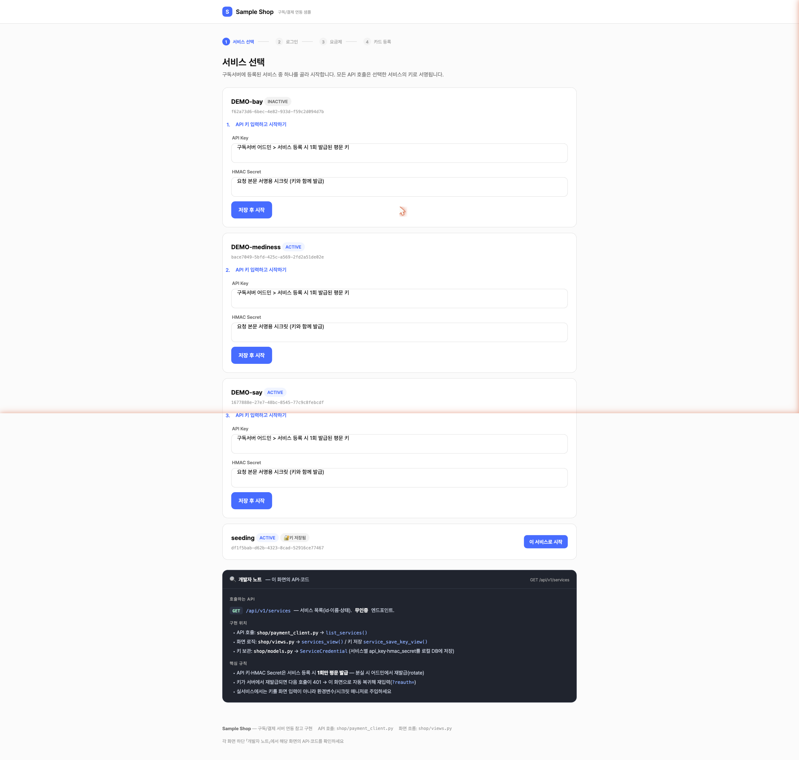
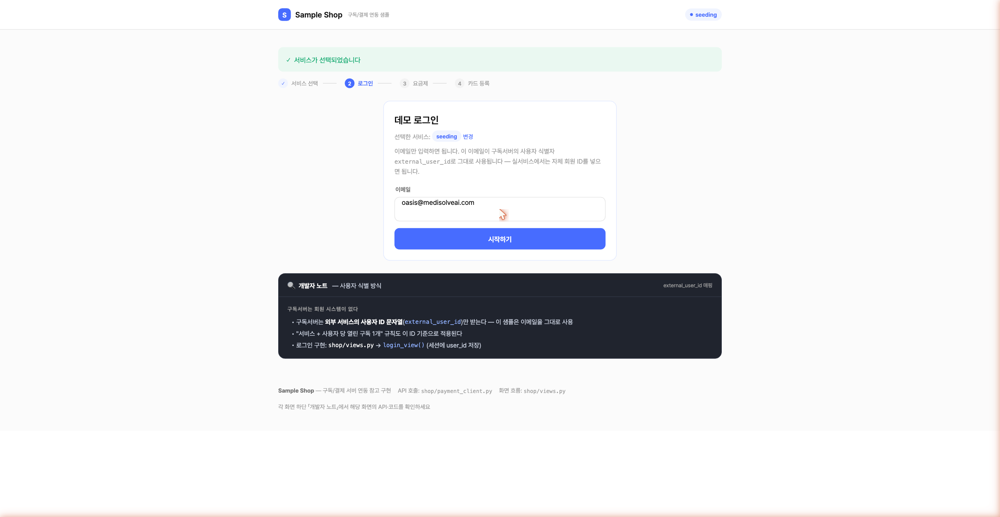
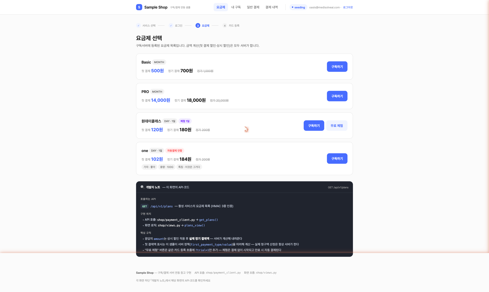
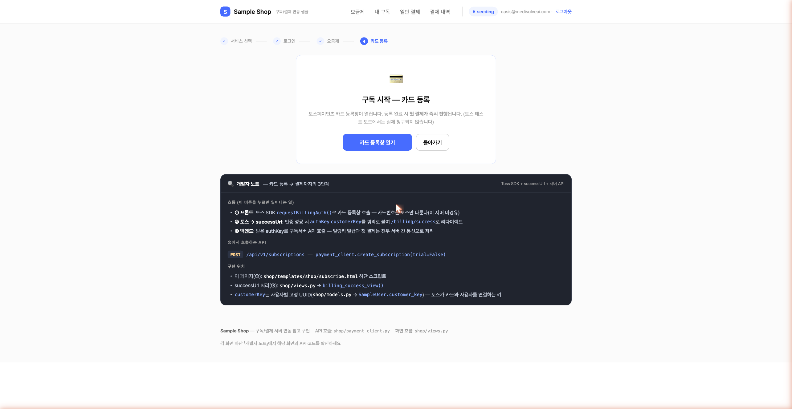
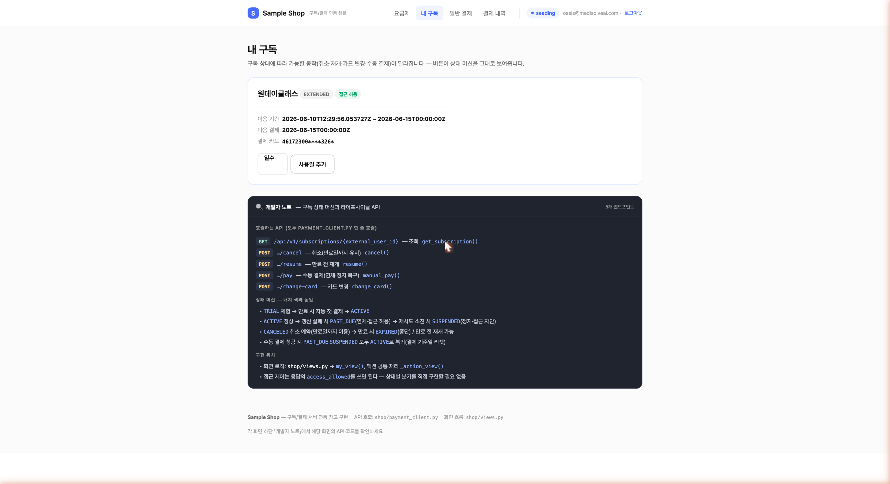
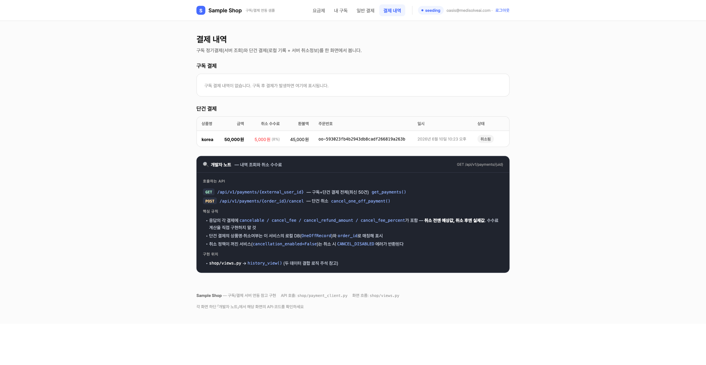

API 연동 (실전)
실제 동작하는 예제 서비스 sample_service(Django)의 코드를 그대로 가져와, 우리 서비스에 바로 적용할 수 있게 설명합니다.
이 장은 개발팀에 그대로 전달하면 됩니다. 모든 코드는 저장소의 sample_service/에 실제로 들어 있는
참고 구현(reference implementation)입니다. 핵심 파일은 두 개뿐입니다.
shop/payment_client.py— 결제 서버를 호출하는 재사용 클라이언트(서명·인증·에러 처리)shop/views.py— 실제 화면 흐름(요금제 → 카드 등록 → 구독 생성 → 조회/취소)
7.1전체 구조 — 누가 무엇을 호출하나
연동은 프론트엔드(토스 SDK)와 백엔드(서버 간 API 호출) 두 부분으로 나뉩니다. 카드 번호는 토스만 다루며, 우리 서버에도 결제 서버에도 저장되지 않습니다.
requestBillingAuth()로 카드 등록 → authKey 획득authKey·customerKey를 붙여 우리 백엔드로 복귀authKey로 구독 생성/결제 — 서버 간 HMAC 인증 통신금액·결제 핵심 로직은 모두 백엔드(③)에서 처리합니다. 프론트는 카드 등록 인증(authKey)만 받아 오고,
실제 빌링키 발급과 결제는 서버 간 통신으로만 일어납니다. 그래야 사용자가 브라우저에서 금액이나 요금제를 조작할 수 없습니다.
7.2준비물과 설정값
연동에 필요한 값과, sample_service가 이를 어떻게 보관하는지입니다.
| 값 | 설명 | sample_service 위치 |
|---|---|---|
PAYMENT_API_BASE | 결제 서버 베이스 URL | config/settings.py (예: http://127.0.0.1:8000) |
API 키 (svc_…) | x-service-key 헤더에 사용 | ServiceCredential.api_key |
| HMAC 시크릿 | x-signature 계산에 사용 | ServiceCredential.hmac_secret |
external_user_id | 우리 서비스의 사용자 식별자(구독 1개 규칙의 기준) | 예제에선 SampleUser.email |
customer_key | 토스가 카드와 사용자를 연결하는 키(사용자별 고정) | SampleUser.customer_key (UUID) |
TOSS_CLIENT_KEY | 프론트 토스 SDK용 클라이언트 키 | config/settings.py |
external_user_id는 '우리 서비스 안에서 이 사람이 누구인가'를 가리키는 값입니다. 예제는 이메일을 썼지만, 여러분 서비스의 회원 번호·UUID 등 고유하게 한 사람을 가리키는 값이면 무엇이든 됩니다. customer_key는 토스 쪽 사용자 식별자로, 한 사용자에게 항상 같은 값을 써야 카드가 올바르게 연결됩니다.
예제는 키를 환경변수 또는 DB(ServiceCredential)에 저장합니다. 여러 서비스를 한 앱에서 다룰 수 있도록 서비스별로 키를 보관하고,
호출 시 creds=(api_key, hmac_secret)로 넘깁니다.
# config/settings.py
PAYMENT_API_BASE = os.environ.get("PAYMENT_API_BASE", "http://127.0.0.1:8000")
SERVICE_API_KEY = os.environ.get("SERVICE_API_KEY", "") # 단일 서비스 폴백
SERVICE_HMAC_SECRET= os.environ.get("SERVICE_HMAC_SECRET", "")
TOSS_CLIENT_KEY = os.environ.get("TOSS_CLIENT_KEY", "")API 키·HMAC 시크릿은 코드에 하드코딩하지 말고 환경변수·시크릿 저장소에 두세요. 노출되면 결제 요청에 악용될 수 있습니다.
7.3인증 헤더 4종
인증 헤더 4종을 '봉인된 등기우편'에 비유하면 이렇습니다.
- API 키 = 보내는 사람 이름(누구인지)
- 타임스탬프 = 발송 시각(너무 오래된 편지는 거부)
- nonce = 일련번호(같은 번호를 또 보내면 위조로 간주)
- 서명 = 봉투에 찍은 '인감 도장'(내용이 바뀌지 않았음을 증명)
| 헤더 | 설명 |
|---|---|
x-service-key | 발급받은 서비스 API 키 |
x-timestamp | 현재 Unix epoch 초(정수 문자열). 서버 허용 오차(기본 ±300초) 내 |
x-nonce | 요청마다 고유한 임의 문자열(1회용, 약 10분간 재사용 불가) |
x-signature | HMAC-SHA256 서명(hex) — 아래 7.4 참고 |
인증이 필요 없는 예외: GET/api/v1/services(서비스 목록)와 POST/api/v1/webhooks/toss(토스 → 서버).
7.4재사용 클라이언트 모듈 — payment_client.py
서명을 만들고 헤더를 붙여 요청을 보내는 부분을 한 곳에 모아 재사용하는 것이 핵심입니다.
아래는 sample_service/shop/payment_client.py의 실제 코드입니다. 그대로 복사해 시작점으로 쓸 수 있습니다.
① 서명 함수와 공통 요청 함수
import hashlib, hmac, json, time, uuid
import requests
from django.conf import settings
def sign_request(secret, method, path, timestamp, nonce, body: bytes) -> str:
# canonical = METHOD\n PATH\n TIMESTAMP\n NONCE\n SHA256_HEX(BODY)
body_hash = hashlib.sha256(body).hexdigest()
message = "\n".join([method.upper(), path, timestamp, nonce, body_hash])
return hmac.new(secret.encode(), message.encode(), hashlib.sha256).hexdigest()
class PaymentAPIError(Exception):
"""결제 서버 에러 응답 {"error": {code, message}} 을 감싼 예외."""
def __init__(self, status, code, message):
super().__init__(message)
self.status, self.code, self.message = status, code, message
def _request(method, path, json_body=None, creds=None):
api_key, hmac_secret = creds if creds else (
settings.SERVICE_API_KEY, settings.SERVICE_HMAC_SECRET)
# ① 본문을 한 번만 직렬화 → 서명·전송에 같은 바이트(body)를 사용 (중요)
body = b"" if json_body is None else json.dumps(json_body).encode()
timestamp = str(int(time.time()))
nonce = uuid.uuid4().hex
# ② 인증 헤더 4종
headers = {
"x-service-key": api_key,
"x-timestamp": timestamp,
"x-nonce": nonce,
"x-signature": sign_request(hmac_secret, method, path, timestamp, nonce, body),
}
if json_body is not None:
headers["Content-Type"] = "application/json"
resp = requests.request(method, settings.PAYMENT_API_BASE + path,
headers=headers, data=body or None, timeout=30)
# ③ 에러는 {"error": {code, message}} 형태 → PaymentAPIError로 변환
if resp.status_code >= 400:
try:
err = resp.json()["error"]
raise PaymentAPIError(resp.status_code, err["code"], err["message"])
except (ValueError, KeyError):
raise PaymentAPIError(resp.status_code, "UNKNOWN", resp.text[:200]) from None
return resp.json()가장 흔한 실수: 서명할 때와 전송할 때 본문을 각각 따로 직렬화하면 바이트가 달라져 서명이 깨집니다(401).
위 코드처럼 body를 한 번만 만들어 서명(sign_request(..., body))과 전송(data=body)에 똑같이 쓰세요.
② 엔드포인트별 얇은 래퍼 함수
각 API는 위 _request()를 감싸는 한 줄짜리 함수로 노출됩니다. 호출부가 깔끔해집니다.
def list_services(): # GET /api/v1/services (무인증)
return _request("GET", "/api/v1/services")["services"]
def get_plans(creds=None): # GET /api/v1/plans
return _request("GET", "/api/v1/plans", creds=creds)["plans"]
def create_subscription(*, plan_id, external_user_id, customer_key,
auth_key, trial, creds=None): # POST /api/v1/subscriptions
return _request("POST", "/api/v1/subscriptions", {
"plan_id": plan_id, "external_user_id": external_user_id,
"customer_key": customer_key, "auth_key": auth_key, "trial": trial}, creds=creds)
def get_subscription(external_user_id, creds=None): # GET /subscriptions/{id}
return _request("GET", f"/api/v1/subscriptions/{external_user_id}", creds=creds)
def cancel(external_user_id, creds=None): # POST /subscriptions/{id}/cancel
return _request("POST", f"/api/v1/subscriptions/{external_user_id}/cancel", creds=creds)
def resume(external_user_id, creds=None): # POST /subscriptions/{id}/resume
return _request("POST", f"/api/v1/subscriptions/{external_user_id}/resume", creds=creds)
def manual_pay(external_user_id, creds=None): # POST /subscriptions/{id}/pay
return _request("POST", f"/api/v1/subscriptions/{external_user_id}/pay", creds=creds)
def change_card(external_user_id, *, customer_key, auth_key, creds=None):
return _request("POST", f"/api/v1/subscriptions/{external_user_id}/change-card",
{"customer_key": customer_key, "auth_key": auth_key}, creds=creds)
def add_usage_days(external_user_id, days, creds=None): # POST /subscriptions/{id}/add-days
return _request("POST", f"/api/v1/subscriptions/{external_user_id}/add-days",
{"days": days}, creds=creds)
def create_one_off_payment(*, order_id, order_name, amount, external_user_id,
customer_key, auth_key, creds=None): # POST /api/v1/payments
return _request("POST", "/api/v1/payments", {
"order_id": order_id, "order_name": order_name, "amount": amount,
"external_user_id": external_user_id, "customer_key": customer_key,
"auth_key": auth_key}, creds=creds)
def cancel_one_off_payment(order_id, reason="사용자 취소", creds=None):
return _request("POST", f"/api/v1/payments/{order_id}/cancel",
{"reason": reason}, creds=creds)
def get_payments(external_user_id, creds=None): # GET /payments/{id} (구독+단건 모두)
return _request("GET", f"/api/v1/payments/{external_user_id}", creds=creds)["payments"]7.5실전 ① — 구독 시작 (카드 등록 → 구독 생성)
가장 중요한 흐름입니다. 프론트에서 토스 카드등록창을 띄우고, 토스가 돌려준 authKey로 백엔드가 구독을 만듭니다.
프론트: 토스 SDK 카드 등록창 (subscribe.html)
<script src="https://js.tosspayments.com/v2/standard"></script>
<script>
const tossPayments = TossPayments("{{ TOSS_CLIENT_KEY }}");
// customerKey는 사용자별 고정값(항상 같은 값이어야 카드가 올바르게 연결됨)
const payment = tossPayments.payment({ customerKey: "{{ user.customer_key }}" });
const params = new URLSearchParams({ mode: "subscribe", plan_id: PLAN_ID, trial: "0" });
document.getElementById("open-toss").addEventListener("click", function () {
payment.requestBillingAuth({
method: "CARD",
// 인증 성공 시 토스가 authKey·customerKey를 붙여 이 URL로 리다이렉트
successUrl: window.location.origin + "/billing/success?" + params.toString(),
failUrl: window.location.origin + "/billing/fail",
customerEmail: "{{ user.email }}",
customerName: "{{ user.email }}",
});
});
</script>이 단계에서 실제 카드번호는 토스 화면에만 입력됩니다. 우리 서버는 카드번호를 보지도, 저장하지도 않습니다.
토스는 '이 카드 등록을 승인했다'는 증표인 authKey만 돌려줍니다.
백엔드: successUrl 처리 → 구독 생성 (views.py)
토스가 /billing/success?authKey=…&customerKey=…로 돌아오면, 백엔드가 그 authKey로 결제 서버 API를 호출합니다.
def billing_success_view(request):
user = _current_user(request)
auth_key = request.GET.get("authKey", "")
customer_key = request.GET.get("customerKey", "")
# 검증: customerKey가 이 사용자 것인지 확인(위조 차단)
if not auth_key or customer_key != user.customer_key:
messages.error(request, "토스 인증 정보가 올바르지 않습니다")
return redirect("/plans")
creds = _creds(request) # 활성 서비스의 (api_key, hmac_secret)
try:
sub = payment_client.create_subscription(
plan_id=request.GET.get("plan_id", ""),
external_user_id=user.email, # 우리 서비스의 사용자 식별자
customer_key=customer_key,
auth_key=auth_key, # 토스가 준 일회용 인증키
trial=request.GET.get("trial") == "1",
creds=creds)
except PaymentAPIError as exc:
# 402 PAYMENT_FAILED, 409 CONFLICT(이미 구독중) 등 → 화면에 표시
return render(request, "shop/result.html",
{"ok": False, "message": f"{exc.message} ({exc.code})"})
return render(request, "shop/result.html",
{"ok": True, "sub": sub, "message": "구독이 시작되었습니다"})응답 sub의 핵심 필드는 status(TRIAL/ACTIVE 등)와 access_allowed(true/false)입니다.
이용 허용 판단은 access_allowed 하나로 하면 됩니다.
첫 결제가 실패하면 구독이 생성되지 않습니다. 카드 거절 등 확정 실패 시 402 PAYMENT_FAILED가 반환되고
구독·결제 행이 남지 않으며(감사 로그에만 기록), 같은 사용자가 다시 호출해도 안전합니다(첫구독 혜택 유지).
이유·집계 영향은 2.7 참고. (타임아웃은 503 PAYMENT_UNRESOLVED — 실패로 처리하지 말고 잠시 후 조회로 확인)
카드 변경도 똑같은 흐름입니다. mode=change-card로 카드등록창을 띄우고, successUrl에서
change_card(user.email, customer_key=…, auth_key=…)를 호출하면 구독·주기는 그대로 두고 카드만 교체됩니다.
7.6실전 ② — 단건(1회성) 결제 + 금액 변조 방지
단건 결제는 금액을 우리 서비스가 정합니다. 그래서 금액을 브라우저가 아니라 서버 세션에 보관해, successUrl 조작으로 금액이 바뀌지 않게 합니다.
# 1) 주문 폼 처리 — 금액을 세션에 저장(클라이언트가 못 바꾸게)
def oneoff_view(request):
if request.method == "POST":
order_name = request.POST["order_name"].strip()
amount = int(request.POST["amount"]) # 서버에서 검증
order_id = f"oo-{uuid.uuid4().hex}" # 멱등 키(중복 결제 방지)
request.session["oneoff"] = { # ← 금액은 세션에만 보관
"order_id": order_id, "order_name": order_name, "amount": amount}
return render(request, "shop/oneoff_checkout.html", {...}) # 토스 카드창
# 2) successUrl — 세션 값만 신뢰해서 결제 요청
def billing_success_view(request): # mode == "oneoff"
pending = request.session.pop("oneoff", None) # 세션에서 꺼냄
if not pending:
messages.error(request, "결제 정보가 만료되었습니다")
return redirect("/pay")
payment = payment_client.create_one_off_payment(
order_id=pending["order_id"], order_name=pending["order_name"],
amount=pending["amount"], # ← 세션 금액(쿼리스트링 무시)
external_user_id=user.email, customer_key=customer_key,
auth_key=auth_key, creds=creds)핵심은 "금액 같은 중요한 값은 절대 브라우저(쿼리스트링·폼 hidden)를 믿지 말 것"입니다. 사용자가 개발자 도구로 값을 바꿔 1만 원짜리를 10원으로 만들 수 있으므로, 결제 직전엔 서버에 저장해 둔 값만 사용합니다.
order_id는 멱등 키입니다. 같은 order_id로 다시 요청하면 새로 결제되지 않고 기존 결과가 돌아옵니다.
네트워크 오류로 재시도할 때 같은 order_id를 쓰면 이중 결제를 막을 수 있습니다.
7.7실전 ③ — 조회·취소·재개·수동결제·사용일 추가
구독 조회와 운영 동작들은 external_user_id만 있으면 호출할 수 있어 간단합니다.
# 내 구독 조회 — access_allowed로 접근 판단
def my_view(request):
try:
sub = payment_client.get_subscription(user.email, creds=_creds(request))
except PaymentAPIError as exc:
if exc.status == 404: # 구독이 아예 없는 경우 → 정상(빈 화면)
sub = None
# 취소 / 재개 / 수동결제 — 공통 패턴 (POST 후 결과 메시지)
payment_client.cancel(user.email, creds=creds) # 해지 예약(만료일까지 이용)
payment_client.resume(user.email, creds=creds) # 해지 예약 철회
payment_client.manual_pay(user.email, creds=creds) # 정지 구독을 즉시 결제로 복구
# 사용일 추가 — 만료일·다음 결제일을 days만큼 미룸 (보상 등)
payment_client.add_usage_days(user.email, 30, creds=creds)결제 내역 조회는 구독 정기결제와 단건 결제를 모두 돌려주며, 각 항목의 kind(SUBSCRIPTION/ONE_OFF)로 구분합니다.
각 결제에는 취소 안내 필드(cancelable, cancel_fee, cancel_refund_amount, cancel_fee_percent)가 함께 옵니다.
all_payments = payment_client.get_payments(user.email, creds=_creds(request))
sub_payments = [p for p in all_payments if p["kind"] == "SUBSCRIPTION"]
oneoff_info = {p["order_id"]: p for p in all_payments if p["kind"] == "ONE_OFF"}
# 단건 취소 — 서비스 취소 정책이 꺼져 있으면 PaymentAPIError(취소 불가)
payment_client.cancel_one_off_payment(order_id, creds=creds)7.8에러 처리 패턴
예제는 모든 호출을 PaymentAPIError로 잡고, 401(키 문제)이면 키 재입력 유도, 그 외에는 메시지로 안내합니다.
def _handle_api_error(request, exc):
if isinstance(exc, PaymentAPIError) and exc.status == 401:
# 키가 바뀌었거나 서명 오류 → 서비스 키 재입력 화면으로
messages.error(request, "이 서비스의 key가 변경되었습니다. 다시 입력하세요.")
return redirect("/services")
# 그 외(402/409/422/429/503 등)는 코드·메시지를 그대로 노출
messages.error(request, f"{exc.message} ({exc.code})")
return None| HTTP · code | 의미 | 대응 |
|---|---|---|
401 UNAUTHORIZED | 키·서명·시간·nonce 문제 | 키 확인, 본문 일관성·시계 동기화 점검 |
403 FORBIDDEN | 허용되지 않은 IP | 호출 서버 공인 IP 등록 요청 |
402 PAYMENT_FAILED | 토스 결제 실패 | 사용자에게 카드 확인 안내 |
404 NOT_FOUND | 리소스 없음 | 구독 미존재는 정상 처리(빈 화면 등) |
409 CONFLICT | 이미 구독 중(1개 규칙) | 기존 구독 안내 |
422 VALIDATION_ERROR | 형식·규칙 위반 | 요청 값 점검(예: 체험 미지원에 trial) |
429 RATE_LIMITED | 요청 한도 초과 | 대기 후 재시도(backoff) |
503 SERVER_DISABLED | 결제서버 비활성화(킬스위치) | 잠시 후 재시도, 관리자 문의 |
7.9엔드포인트 빠른 참조
메서드 · 경로 (/api/v1 접두사) | 역할(기능) | 클라이언트 함수 |
|---|---|---|
| GET/services | 등록된 서비스 목록 조회(이름·상태). 연동할 서비스 선택용. | list_services() · 무인증 |
| GET/plans | 판매 중인 요금제와 실제 청구 금액(amount) 조회. 화면 노출용. | get_plans() |
| POST/subscriptions | 구독 시작 — 빌링키 발급 + 첫 결제(체험이면 결제 없이 시작). 금액은 서버가 계산. | create_subscription() |
| GET/subscriptions/{id} | 구독 상태·이용 허용 여부(access_allowed) 조회. | get_subscription() |
| POST/subscriptions/{id}/cancel | 해지 예약 — 만료일까지 이용 유지, 자동 갱신만 중단. | cancel() |
| POST/subscriptions/{id}/resume | 해지 철회 — 만료 전 자동 갱신을 다시 켬. | resume() |
| POST/subscriptions/{id}/change-card | 카드(빌링키) 교체 — 구독·주기는 그대로, 결제 카드만 변경. | change_card() |
| POST/subscriptions/{id}/pay | 수동 결제 — 정지(SUSPENDED) 구독을 즉시 결제로 복구. | manual_pay() |
| POST/subscriptions/{id}/add-days | 사용일 추가 — 만료일·다음 결제일을 N일 연기(보상 등). | add_usage_days() |
| GET/payments/{id} | 결제 내역 조회 — 구독 정기+단건 모두(kind로 구분), 취소 수수료 안내 포함. | get_payments() · 구독+단건 |
| POST/payments | 단건(1회성) 결제 생성. 같은 order_id 재요청은 멱등. | create_one_off_payment() |
| POST/payments/{order_id}/cancel | 단건 결제 취소(환불) — 취소 정책에 따라 수수료 차감 후 환불. | cancel_one_off_payment() |
{id}는 external_user_id입니다.
7.10연동 체크리스트
- 결제 서버 베이스 URL · API 키 · HMAC 시크릿을 환경변수/시크릿 저장소에 설정했다.
- 호출 서버의 공인 IP를 허용 IP 목록에 등록 요청했다(누락 시 403).
payment_client.py의 서명·본문 일관성(같은body바이트 사용)을 지켰다.- 서버 시계를 NTP로 동기화했다(±5분 초과 시 401).
external_user_id·customer_key매핑 규칙을 정했다(사용자별 고정).- 토스 SDK
requestBillingAuth()→successUrl처리 흐름을 구현했다. - 단건 결제 금액은 서버 세션에 보관하고,
order_id로 멱등성을 확보했다. PaymentAPIError로 에러 코드별 분기(특히 401 재인증, 429 backoff)를 처리했다.- 먼저 토스 테스트 키로 전체 흐름을 시연·검증했다.
전체 동작 예제는 저장소의 sample_service/에 있습니다. 서비스 선택 → 키 입력 → 로그인 → 요금제 →
구독/단건 결제까지 실제로 돌려 보면서 우리 서비스 연동의 시작점으로 삼으세요. 아래 7.11 실제 화면으로 따라가기에서 화면을 순서대로 볼 수 있습니다.
7.11실제 화면으로 따라가는 연동 흐름 sample_service 데모
저장소의 예제 서비스 sample_service를 실제로 실행한 화면입니다. 서비스 선택 → 로그인 → 요금제 → 카드 등록 → 내 구독 → 결제 내역까지
한 번 따라가면 우리 서비스가 결제 서버를 어떻게 쓰는지 전체 그림이 잡힙니다.
이 데모의 모든 화면 하단에는 검은색 「🔍 개발자 노트」 패널이 있습니다. 펼치면 그 화면이 어떤 API를 호출하고 어느 파일이 처리하는지를 그 자리에서 보여줍니다 — "화면이 곧 문서"입니다.
① 서비스 선택 — GET/api/v1/services
결제 서버에 등록된 서비스 목록을 받아 보여줍니다(무인증). 사용할 서비스를 고르는 단계입니다.
서비스 카드 아래에는 현재 등록된 이메일 목록이 함께 표시됩니다. 이 데모에 로그인했던 사용자(external_user_id)들로, 자동으로 등록·누적되며 최근 등록순으로 정렬됩니다. 어떤 이메일로 테스트할지 한눈에 확인하는 용도입니다(서비스를 고른 뒤 로그인 화면에서 해당 이메일로 로그인).

② API 키 입력 — 발급받은 키 저장
고른 서비스의 API 키 · HMAC 시크릿을 입력해 저장합니다(이후 모든 호출이 이 키로 서명됨). 한 번 저장하면 다음부터는 선택만 하면 됩니다.
③ 로그인 — 이메일이 external_user_id
데모는 이메일만으로 로그인합니다. 이 이메일이 결제 서버의 사용자 식별자 external_user_id로 그대로 쓰입니다(실서비스에서는 회원 ID를 넣으면 됩니다).

④ 요금제 — GET/api/v1/plans
구독 가능한 요금제와 서버가 계산한 첫 결제액·정기 결제액(할인 반영)을 보여줍니다. 체험 제공·자동결제 안함 같은 정책도 함께 표시됩니다.

⑤ 구독 시작(카드 등록) — 토스 SDK → successUrl → POST/api/v1/subscriptions
가장 중요한 화면입니다. 카드 등록창 열기를 누르면 토스 SDK requestBillingAuth()가 카드 등록창을 띄우고,
인증이 끝나면 authKey를 들고 우리 백엔드로 돌아와 create_subscription()으로 구독을 만듭니다.
아래 캡처의 개발자 노트가 이 3단계를 그대로 설명합니다.

카드번호는 토스 등록창에서만 입력되고 우리 서버·결제 서버를 거치지 않습니다. 백엔드는 토스가 준 authKey로만 구독을 만듭니다. (이 캡처는 등록창을 열기 전 단계까지입니다.)
⑥ 내 구독 — GET/api/v1/subscriptions/{id}
현재 구독 상태와 접근 허용 여부(access_allowed), 이용 기간, 다음 결제, 마스킹된 카드를 보여줍니다. 상태에 따라 가능한 동작(취소·재개·카드 변경·사용일 추가)이 달라집니다.

⑦ 결제 내역 — GET/api/v1/payments/{id}
구독 정기결제와 단건 결제를 한 화면에서 봅니다. 단건 결제는 취소 시 수수료·환불액까지 표시됩니다(서버가 계산해 내려줌).

이 데모를 직접 실행하려면 결제 서버(8000)와 샘플 서비스(8001)를 함께 띄우고 http://127.0.0.1:8001에 접속하세요.
각 화면의 개발자 노트를 펼쳐 가며 따라가면, 위 7.4~7.7의 코드가 실제로 어디서 호출되는지 눈으로 확인할 수 있습니다.